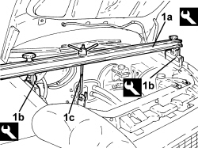
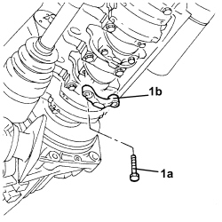
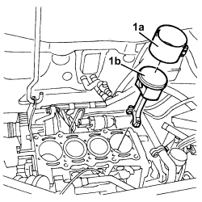

1028H12 SET OF PISTONS WITH CONNECTING RODS - R.R WITH CYLINDER HEAD/S REMOVED
- Path
- Procedures > 10 ENGINE > 1028 PISTONS AND CONNECTING RODS > 1028H PISTONS AND CONNECTING RODS > 1028H12 SET OF PISTONS WITH CONNECTING RODS - R.R WITH CYLINDER HEAD/S REMOVED
- Kind
- repair procedure (removal / refitting; the operation number is the code)
- Applies to
- engines: 1.4 8v; all production periods
- Interactive page
- https://sloeber94.github.io/elrnDB-fDbl/en/#/223000120
Applies to: engines: 1.4 8v; all production periods
 Removing
Removing
 Refitting
Refitting1. Fit engine mount crossmember (1a) with blocks (1b) and link (1c).
Description | Code | Function | |
|---|---|---|---|
1a | Crossmember | 1.870.595.000 | Power unit support |
Description | Code | Function | |
|---|---|---|---|
1b | Support blocks | 1.870.650.000 | Power unit support |

Applies to: engines: 1.4 8v; all production periods
Op. 0010T12 ENGINE OIL AND FILTER - REPLACE
Op. 2110A60 MANUAL GEARBOX/ENGINE COUPLING BRACKET - R+R
Op. 4410D17 REINFORCEMENT FOR FRONT SUSPENSION CROSSMEMBER - R.R.
Op. 1020A20 CRANKCASE OIL SUMP - R + R CLEAN SEALS FOR SEALANT APPLICATION
Op. 1084B28 ENGINE OIL INTAKE PUMP - R + R WITH CRANKCASE SUMP REMOVED
1. Undo the bolts (1a) and remove the connecting rod cap (1b).
- Repeat the operation for the remaining pistons.

Applies to: engines: 1.4 8v; all production periods
- Lower the lift.
- Remove the pistons complete with connecting rods.
Applies to: engines: 1.4 8v; all production periods
Refitting
Removing1. Use the tool (1a) and fit the piston (1b) in the cylinder liner/bore.

Applies to: engines: 1.4 8v; all production periods
- Repeat the operation for the remaining pistons.
- Position the connecting rod caps and secure them by tightening the fixing bolts to the recommended torque.
Value daNm | Fastening | Component | dia | |
|---|---|---|---|---|
- | 1.9 ÷ 2.1 + 40° +/- 2° | Bolt | Connecting rod big end bearing caps | M8 |
Op. 1084B28 ENGINE OIL INTAKE PUMP - R + R WITH CRANKCASE SUMP REMOVED
Op. 1020A20 CRANKCASE OIL SUMP - R + R CLEAN SEALS FOR SEALANT APPLICATION
Op. 4410D17 REINFORCEMENT FOR FRONT SUSPENSION CROSSMEMBER - R.R.